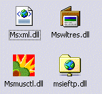
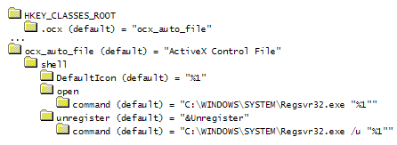

Icon Resource Demonstration Project (45K)
Icon Resource Demonstration Project (45K)
 21 Mar 2000
21 Mar 2000
First Posted

Icons without forms and document association icons in VB
Using resources rather than VB's weak icon selection to provide better binaries
VB allows you to choose an icon for an executable, but it offers a somewhat limited choice. The icon must be stored in a form included in your VB project, and you can only pick one icon to be exposed publicly per project. Whilst the single icon is the most important one, you might want to have additional icons for two reasons:
- To allow the user to pick alternative icons in Explorer's "Change Icon" dialog for shortcuts.
- To allow a document icon to be associated with files for your application.
In Win32 applications, you can have as many public icon resources as you want for a binary. The icon used as the icon in explorer for EXEs and DLLs (and any other binary file where the DefaultIcon key in the file association for the file is set to %1 - more on this later) is the icon stored with resource id 0 in the resource file. Since VB allows you to compile resources into your application, you can use this information to set icons for ActiveX binaries which don't have forms. You can also add additional icons to EXEs.
The first thing to note is that although VB has a resource editor (provided built-in for VB6, available as a Downloadable Add-in for VB5) this does not create public icon resources. To create icon resources which are visible to Explorer, you need to script the resources using the Resource Compiler tool directly.
- Setting the Explorer Icon for ActiveX Binaries without forms
This is done simply by creating a resource compiler script with the icon you wish to show in explorer at resource ID 0, for example:
// Icons for this application 0 ICON MOVEABLE PRELOAD STIMPY.ICO
Compile this file to a .RES file, add it to your project and compile it. You will see that the project automatically gets the icon in the resource file.
Note that .OCX files are not normally set up to show an icon. To ask Explorer to show an icon extracted from a the file itself, you just set the DefaultIcon registry key to "%1" for the file association. You might want to add a file association for .OCX files to allow you to quickly and easily register and unregister the control in Explorer. Here are the entries you need - note you should also make the same entries under the HKEY_LOCAL_MACHINE\SOFTWARE\Classes key:
Having entered these, you will see when you right click on a .OCX file in Explorer you get an Open default option which will call regsvr32 to register the file, and also an Unregister option which allows you to remove the registration entries.
- To provide alternative icons.
To do this you use the same approach as for the last section except you add icon resources with identifiers other than 0 (numeric or strings). Setting up a document type association to use these icons is just a matter of ensuring the DefaultIcon key gets populated with the executable followed by a comma and the 0-based index of the icon in the executable (remembering that if VB is set to create an icon for you in the executable's properties, this will get priority over any icons in your resource file.) To read about this in more detail, check out the article "Passing command line parameters to an existing instance of your app, and making sure only one instance runs.".